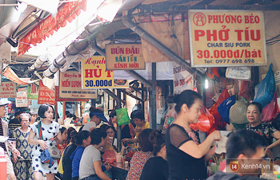

ĐỊA CHỈ: Hàng Chiếu, Đồng Xuân, Hoàn Kiếm, Hà Nội
Một con ngõ nhỏ luôn sực mùi đồ ăn với những món như hủ tíu, phở tíu, hay bún đậu, v.v...
MÓN NỔI BẬT: Phở Tíu

ĐỊA ĐIỂM NỔI BẬT: KHU VỰC ĐỒNG XUÂN
ĐIỂM ĐẾN #1: NGÕ ĐỒNG XUÂN
Được mệnh danh là "Ngõ Ẩm Thực Hà Nội", không phải ai cũng biết đến con ngõ này do người dân ít khi chia sẻ với du khách nước ngoài. Nhưng đây là một trong những điểm ăn sáng không thể bỏ lỡ nếu bạn muốn có một bữa ăn sáng đầy đủ và thoải mái.
ĐỊA CHỈ: Hàng Chiếu, Đồng Xuân, Hoàn Kiếm, Hà Nội
Một con ngõ nhỏ luôn sực mùi đồ ăn với những món như hủ tíu, phở tíu, hay bún đậu, v.v...
MÓN NỔI BẬT: Phở Tíu
ĐỊA ĐIỂM #2:CHỢ ĐỒNG XUÂN
Sau một bữa ăn sáng no nê, ngại gì mà chúng ta không bắt đầu cuộc hành trình luôn bằng cách khám phá luôn khu vực xung quanh đó nhỉ? Đúng vậy, Chợ Đồng Xuân không chỉ là nơi buôn bán tấp nập của người dân Hà Nội, mà còn là nơi để khám phá những điều thú vị trong lòng Hà Nội, và để xuôi bữa sáng luôn.
ĐỊA CHỈ: 15 Cầu Đông, Đồng Xuân, Hoàn Kiếm, Hà Nội
Một khu chợ đã nổi tiếng từ những năm 1900 nay vẫn đông khách cả trong lẫn ngoài nước. Một địa điểm không thể bỏ qua.
ĐIỂM ĐẶC BIỆT: Được xây dựng vào năm 1889, bạn có thể đến đây cảm nhận không khí của tòa nhà đã tồn tại ở Việt Nam suốt 120 năm mặc dù đã qua nhiều lần tu sửa
ĐỊA ĐIỂM #3: Ô QUAN CHƯỞNG
Sau khi đi mua sắm và khám phá khu chợ Đồng Xuân, chắc hẳn mọi người cũng muốn được đi tham quan tại một địa điểm mà chúng ta có thể chụp một chút ảnh lưu niệm để đem về làm kỷ niệm. Vậy Ô Quan Chưởng là một địa điểm không thể bỏ lỡ để đem về những tấm hình quý giá cũng như học lại một chút về lịch sử Thăng Long Hà Nội và ý chí bất khuất của người Việt chúng ta.
ĐỊA CHỈ: Nằm trên ngã tư Hàng Chiếu – Đào Duy Từ
Lịch Sử: Ô Quan Chưởng còn được biết đến với cái tên Ô Đông Hà, được xây dựng vào thời vua Lê Hiển Tông (1749), nằm ở phía Đông của kinh thành Thăng Long, cách bến sông Hồng xưa chỉ khoảng 80 mét nên thuận lợi cho việc đi lại, buôn bán từ các vùng khác với kinh thành. Tên gọi Ô Quan Chưởng là để tưởng nhớ công lao và sự hi sinh cao cả của một viên quan Chưởng Cơ đã cùng 100 binh lính nhà Nguyễn quyết tâm chiến đấu chống quân Pháp đến cùng khi chúng tấn công Hà Nội ngày 20/11/1873 qua cửa ô Đông Hà.

Đặc điểm nổi bật:Một nơi chụp ảnh siêu đẹp cũng như học hỏi về lịch sử Việt Nam
#1: BÚN CHẢ LÊ VĂN HƯU
Bún chả là một món ăn không thể bỏ qua khi bạn đặt chân đến Hà Nội. Bún chả là một trong những đặc sản không chỉ riêng của Hà Nội, mà còn của cả Việt Nam, và đủ để sánh vai với các món ăn "cao lương mỹ vị" của nước ngoài, đến cựu tổng thống Mỹ Barack Obama còn khen ngon thì khỏi bàn.

Địa chỉ:24 Lê Văn Hưu, quận Hai Bà Trưng, Hà Nội
Một chút về cách đến: Phố Lê Văn Hưu dài 364m, rộng 10m. Từ ngã năm phố Lò Đúc đến ngã tư phố Huế - Nguyễn Du, cắt ngang phố Ngô Thì Nhậm.
Điểm đặc biệt: Bún chả đã từng là nơi ăn tối của cựu tổng thống Mỹ Barack Obama với đầu bếp thế giới Anthony Bourdain
Giá: 40000đ - 100000đ tùy theo mức độ
#2: Bún đậu mắm tôm
Nếu bún chả được coi là món ăn đặc trưng nhất của thành Hà Nội, thì xếp thứ hai chỉ có thể là bún đậu mắm tôm. Được coi như là một trong những món ăn "đường phố", bạn có thể đi khắp mọi nơi mà vẫn thấy có các xe hàng, gánh hàng bán bún đậu mắm tôm vào buổi trưa. Không những vậy, bún đậu mắm tôm không chỉ bán đậu với mắm, mà còn có các loại thức ăn khác phù hợp với khẩu vị của bạn như nem, chả cốm, v.v...

Địa chỉ: 1B, Ngõ Trạm, Quận Hoàn Kiếm, Hà Nội.
Điểm Đặc Biệt: Một trong những quán bún đậu được đánh giá cao nhất Hà Nội
Giá: 50000đ - 80000đ
ĐỊA ĐIỂM NỔI BẬT: HỒ TÂY
Hồ Tây là một trong những địa điểm "tụ tập" được yêu thích nhất khi nhắc đến dạo chơi về chiều của cả giới trẻ và người già. Mặc dù để đi hết một vòng Hồ Tây chúng ta sẽ cần kha khá nhiều thời gian, nhưng việc dừng lại ở quán trà đá ven hồ, thưởng thức những cốc nước mát lạnh cùng gió hồ thổi vào cũng đâu quá tệ, nhỉ?
Một số hình ảnh về Hồ Tây


ĐỊA ĐIỂM NỔI BẬT: QUẬN HOÀN KIẾM
#1: Lăng Bác
Một địa điểm không thể nào quên cả ban sáng lẫn về đêm, Lăng Bác là nơi tưởng nhớ vị lãnh tụ vĩ đại của chúng ta, chủ tịch Hồ Chí Minh, cũng là một nơi đáng để ghé thăm vào ngày Chủ Nhật, khi chúng ta có thể chứng kiến nghi lễ rước cờ hàng tuần như một cách để bày tỏ lòng kính trọng với Bác.
Một số hình ảnh về Lăng Bác


Hình ảnh Lăng Bác mùa lễ hội
#2: Hồ Hoàn Kiếm
Nhắc đến dạo chơi Hà Nội vào ban đêm, Hồ Hoàn Kiếm là một nơi không thể bỏ lỡ. Sự tỏa sáng của ánh đèn neon trên cây, sự sáng tạo với những bức tượng trang trí hay Đến Ngọc Sơn hay Tháp Rùa tỏa sáng giữa hồ đủ để khiến bạn há hốc mồm kinh ngạc hay thấy thích thú. Nếu may mắn hơn nữa, bạn sẽ bắt gặp hồ Hoàn Kiếm với những show ca nhạc khuấy động cả tâm hồn lẫn tâm trí bạn.
Một số hình ảnh về Hồ Hoàn Kiếm


Vậy là chúng ta đã kết thúc một cuộc hành trình quanh những con phố Hà Nội. Chúc các bạn thuận lợi trên cuộc phiêu lưu của chính mình !